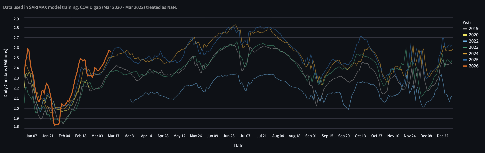
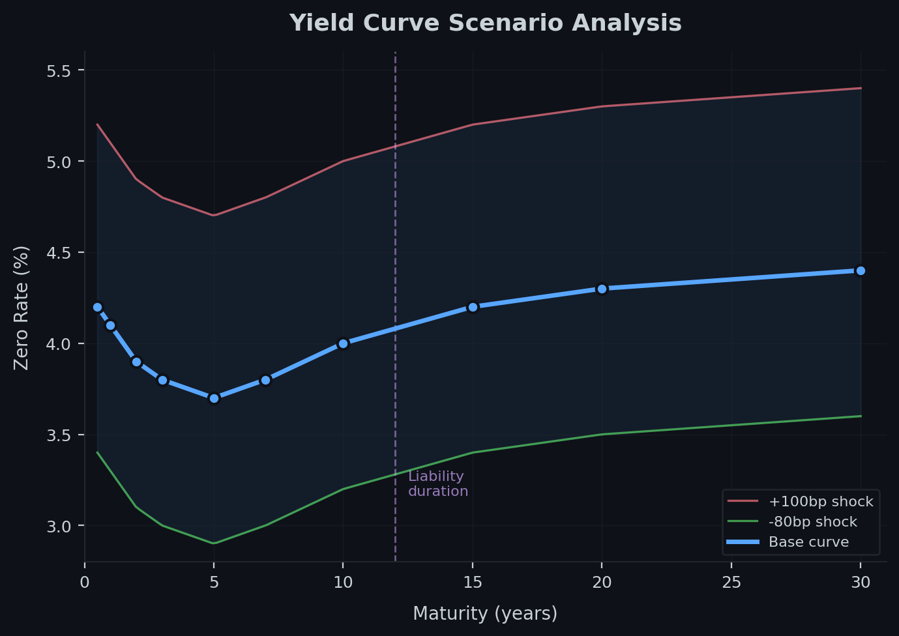

About
I'm a data analyst at Penn Mutual Asset Management, where I build advanced data analytics and investment data infrastructure for a $40B fixed income portfolio. Previously, I developed predictive models, NLP pipelines, and computer vision systems at Lenovo.
I hold an MS in Computer Science and a BA in Economics from the University of Chicago. Outside of work, I build forecasting systems that trade on prediction markets, play poker and chess, sail, and rock climb.
Experience
Penn Mutual Asset Management
Data Analyst
March 2024 — Present
- Built XGBoost credit rating downgrade prediction model for a $40B fixed income portfolio with 32 engineered features and walk-forward cross-validation
- Designed investment data infrastructure (Python/SQL) powering portfolio analytics, risk reporting, and automated data quality validation
University of Chicago
Teaching Assistant, Advanced Machine Learning for Public Policy
January 2024 — March 2024
- Supported instruction for graduate-level applied machine learning course
Lenovo
Data Scientist / Data Analyst
July 2021 — September 2023
- Built predictive models for employee attrition across 60,000 global employees; developed NLP and computer vision pipelines with 2x inference speedup via GPU acceleration
- Automated ETL workflows reducing manual reporting time by ~85%; built interactive dashboards in Tableau and Power BI
Featured Projects

TSA Checkpoint Forecasting & Trading System
SARIMAX model forecasting weekly TSA checkpoint volumes with Bayesian partial-week conditioning and 25,000-path Monte Carlo simulation. Deployed live on Kalshi prediction markets, achieving +17% return over a 109-week walk-forward backtest with 1.3% MAPE. Automated trading infrastructure with 6-gate order validation, Kelly sizing, and GitHub Actions execution every 15 minutes.

Insurance Hedging Simulator
Quantitative sandbox for modeling insurance liabilities on yield curves. Computes duration, DV01, and key-rate sensitivities, then constructs interest rate swap hedges and runs stress tests on the combined portfolio. Built with comprehensive test suites validating core financial mathematics.
Film ↔ Books
AI-powered cross-media recommendation engine. Enter your Letterboxd username to get personalized book recommendations based on your film taste, powered by Claude. Also includes an automated twice-weekly NYC film screening digest with Letterboxd rating enrichment, delivered via email.
More Projects
Gas Price Forecaster & Market Maker
AR(1) forecasting pipeline for AAA gas prices with automated Kalshi order generation. Features a Streamlit dashboard, Kelly criterion sizing, and Discord alerts.
Evaluating Fine-Tuned GPT Dialogue Models
NLP research: cross-domain conversations between fine-tuned DialoGPT models. Measures coherence via log-likelihood and GloVe similarity across 30 conversations per model pair.
Album Review Analysis
Statistical analysis of ~17,000 album reviews. Tests for grade inflation via hypothesis testing, then builds NLP models to predict review scores from text.
Equity Valuation Pipeline
Modern data pipeline for equity valuation using Snowflake warehousing and dbt transformations. Analyzes AAPL, MSFT, GOOGL, META, and XOM fundamentals.
Family Office Data Platform
Full data engineering platform: ETL pipelines, dbt analytics, Great Expectations validation, Airflow orchestration, and an LLM-powered analyst assistant.
Adventure Game in Haskell
TF2-themed text adventure showcasing parser combinators, monadic state management, and functional design patterns across 18 Haskell modules.
Parallelized Neural Network for MNIST
Ensemble training via work-stealing and work-borrowing parallelism. Matrix ops, gradient descent, and backpropagation from scratch in Go.
Education
The University of Chicago
MS in Computer Science
June 2022 — December 2023
GPA: 3.74/4.00 · Admitted with Merit Scholarship
Time Series Analysis, NLP, Machine Learning, Parallel Programming, Algorithms
The University of Chicago
BA in Economics
September 2017 — June 2021
GPA: 3.63/4.00 · Captain of Sailing Team
Econometrics, Statistical Models/Methods, Linear Algebra